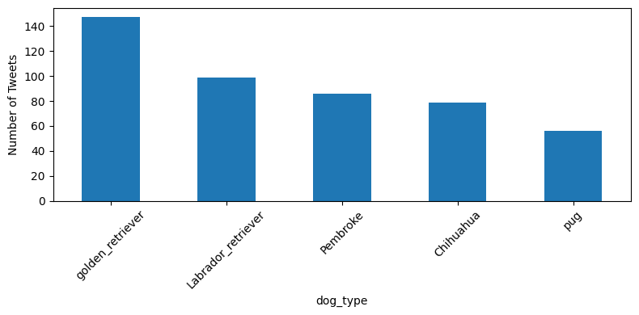
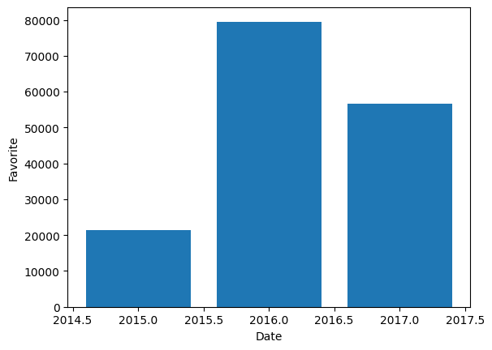

This report summarizes key findings from the cleaned dataset of tweets from the popular @WeRateDogs Twitter account. The project involved gathering data from multiple sources, cleaning and merging it into a single dataset, and analyzing the content for trends and insights. The final dataset combines tweet metadata, image classification predictions, and tweet-level engagement metrics (retweets and favorites).
The most frequently predicted dog breed in the dataset is the Golden Retriever, followed by the Labrador Retriever and Pembroke. These breeds dominate the dataset, likely due to their popularity and the way they’re featured in user-submitted photos.
When filtering for dogs that received the maximum rating of 10, Golden Retrievers and Pembrokes again topped the list. This shows a correlation between breed popularity and high user ratings. These breeds are not only the most common but also the most appreciated by the community.
The number of retweets and favorites peaked in 2016, with a visible decline in later years. This could be attributed to the account’s viral growth during 2016 or changes in Twitter’s algorithm. Early tweets generally received lower engagement, which aligns with the smaller audience size during that time.
A correlation analysis showed a mild positive relationship (~0.3) between a dog’s rating and the number of retweets it received. While higher ratings can increase visibility, they are not the sole factor in determining a tweet’s popularity.
The bar chart below displays the five most commonly predicted breeds:
The following chart illustrates average retweet counts per year, showing peak activity in 2016:
The cleaned dataset from @WeRateDogs reveals trends in dog breed popularity, user ratings, and engagement over time. Golden Retrievers and Pembrokes not only appear most frequently but also receive the highest ratings. While high ratings tend to correlate with more retweets, other factors also play a role. These insights show how humor, breed recognition, and timing contribute to viral content.